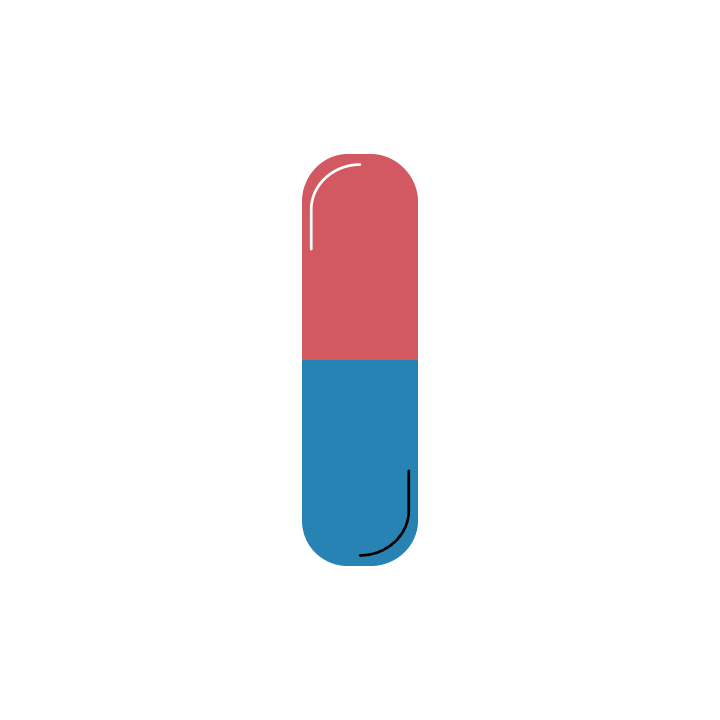

|
RECYCLEAIDTOGETHER WE CAN MAKE A DIFFERENCE |
|
RECYCLEAIDTOGETHER WE CAN MAKE A DIFFERENCE |
 MEDICINE
Unopened, unused and out-of-date medicines can be returned to pharmacies for disposal. Once medicines have left the pharmacy, they cannot be recycled or re-used by anyone else. Inhalers are recyclable though at participating pharmacies.
_____________________________________________________________________________________________________
Wasted or unused medicine is a serious and growing problem within the NHS that you can help tackle. It is estimated that as much as 300million Rupees is wasted every year on unused or partially used medication which cannot be recycled or re-used. A campaign called Only Order What You Need, working with the NHS, asks people to think carefully before ordering repeat prescriptons.
How can I get rid of them?
1. Return to a pharmacy or chemist for safe disposal
2. Do not flush medicines down the toilet
What about empty blister packs for tablets/pills?
These items are not recyclable. Please throw these in your rubbish bin. The cardboard box that houses the blister packs can be recycled with other cardboard items.
Inhalers - did you know?
Inhalers can be recycled at participating pharmacies. For more information or to find your nearest pharmacy.
1. Approximately 73 million inhalers are used in the India every year*
2. Landfill disposal of inhalers is harmful to the environment both in material waste and in greenhouse gas emissions should the gas canisters become pierced or crushed and the propellant released
3. If every inhaler-user in the India returned all their inhalers for one year, this would save 512,330 tonnes of CO2eq - the same as a VW Golf car being driven around the world 88,606 times*